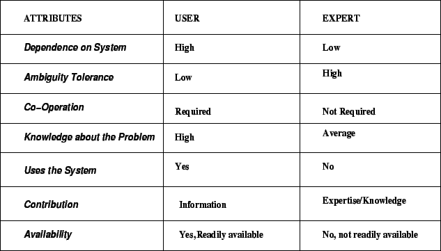

Next: KMSLC Approaches
Up: Conventional Vs KM Systems
Previous: Key Differences
Contents
- Both cycles starts with a problem and end with a solution.
- The early phase in case of conventional systems development life cycle
starts with information gathering. In KMSLC the early phase needs
knowledge capture.
- Verification and validation of a KM system is often very similar to
conventional systems testing.
- Both the systems analyst and the knowledge developer needs to choose
the appropriate tools for designing their intended systems.
Figure 2.2:
Users and Experts: A Comparison
|

|
Knowledge Management Systems
2004-11-01